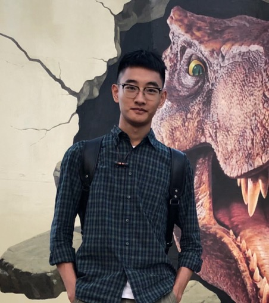

|  | Ph.D Student |
I am a final-year Ph.D student, advised by Prof. Chunyan Miao. I received my B.Eng. degree in Electrical Engineering and B.A. degree in Economics in July 2021.
My PhD research aims at bridging programming language and natural language. Specifically, I focus on code search (code retrieval) [RACS’22, Soft-InfoNCE’23], code generation [GiFT’25], and the synergy of the two through Generation-Augmented Retrieval [ReCo’24] and Retrieval-Augmented Generation framework. Feel free to check out the slide for a quick look at my research.
I am on the job market this year! Please feel free to reach out if you’d like to discuss opportunities. You can find my CV here.
Towards Goal-oriented Prompt Engineering for Large Language Models: A Survey
Haochen Li, Jonathan Leung, and Zhiqi Shen
Arxiv, 2024.
[paper] [resource]
GiFT: Gibbs Fine-Tuning for Code Generation
Haochen Li, Wanjin Feng, Xin Zhou and Zhiqi Shen
In The 63rd Annual Meeting of the Association for Computational Linguistics. (ACL 2025)
[paper] [code]
Rewriting the Code: A Simple Method for Large Language Model Augmented Code Search
Haochen Li, Xin Zhou, and Zhiqi Shen
In The 62nd Annual Meeting of the Association for Computational Linguistics. (ACL 2024 Oral)
[paper] [code]
Rethinking Negative Pairs in Code Search
Haochen Li, Xin Zhou, Luu Anh Tuan, and Chunyan Miao
In The 2023 Conference on Empirical Methods in Natural Language Processing. (EMNLP 2023)
[paper] [code]
Exploring Representation-level Augmentation for Code Search
Haochen Li, Chunyan Miao, Cyril Leung, Yanxian Huang, Yuan Huang, Hongyu Zhang, and Yanlin Wang
In The 2022 Conference on Empirical Methods in Natural Language Processing. (EMNLP 2022)
[paper] [code]
Research Intern in Microsoft Research Asia
Nov. 2021 – Dec.2021 Advisor: Prof. Yanlin Wang
Topic: Code Search
Deep Learning Intern in Mech-Mind Robotics Inc.
Nov. 2020 – Apr. 2021
Topic: Object Detection, Image Segmentation and Anomaly Detection
Research Intern in Institute of Software, Chinese Academy of Sciences
Jan. 2020 – Aug. 2020 Advisor: Prof. Jingzheng Wu
Topic: Code Representation Learning
Conference Reviewer / PC Members:
2025: ICML, NeurIPS, ACL ARR
2024: NeurIPS, ICLR, ACL ARR, EMNLP Industry Track (EMNLP 2024 Outstanding Reviewer)
2023: ACL, EMNLP, EMNLP Industry Track
2022: EMNLP